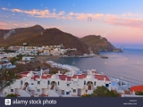
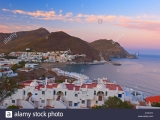

15 de Septiembre
Playa de Mosul
La playa más famosa del Parque Natural, con el permiso de Playa de Genoveses, por haber aparecido en multitud de películas y anuncios comerciales. Esta playa debe su singularidad a las formaciones de lava erosionada que la rodean, a la belleza de su arena fina y a su agua cristalina.
15 de Octubre
El Playazo
Una de las playas más bellas del parque es el Playazo de Rodalquilar, situada a unos 3 km del pueblo. Con 400 metros de longitud y 30 de anchura es difícil no encontrar en este lugar el sitio ideal donde tender la toalla. La arena es fina y dorada, el agua es tranquila y la pendiente para sumergirse es progresiva, por lo que tiene unas condiciones para el baño excelentes para toda la familia. En verano sí que es cierto que la facilidad de acceso y la bondad del baño en esta playa la masifican un poco.
15 de Noviembre
Playa de los Muertos
La playa de Los Muertos es una enorme playa totalmente recta de más de un kilómetro de longitud y que tiene el agua más azul y cristalina de la zona. Esta hermosa playa aparece en casi todas las lista de las mejores playas de España. Entre sus virtudes destaca el agua, de azul intenso, la arena, muy agradable porque no te reboza pero tampoco tiene piedras grandes, y el aislamiento, está lejos de cualquier pueblo, y a mitad de camino entre Agua Amarga y Carboneras.
 
